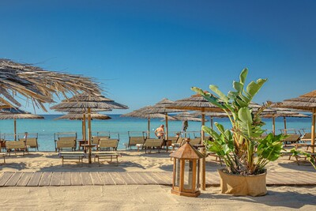
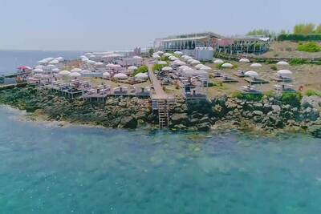

Beaches

Togo Bay Beach
An oasis of emotions between dunes and sea where you can enjoy the sun and the beach in perfect relaxation in Torre Lapillo, Porto Cesareo.
Explore

Lido Marinelli
It is located near Patù, in Marina di Felloniche, along the Ionian coast of Salento. The beach is ideal for those who want to discover the secret corners of Salento enjoying days of relaxation and tranquility away from the chaos of the city.
Explore
Ficò Lido
Lido Ficò is a suggestive beach surrounded by nature, on the enchanting Adriatic cliff of Marina di Marittima, in Salento. It has a Green Area on the natural lawn and a panoramic Relax Area in the Mediterranean scrub.
Explore
Balelido
Well-kept Lido, private guarded parking, distance between umbrellas, total relaxation at the Balelido in Torre Mozza.
Explore